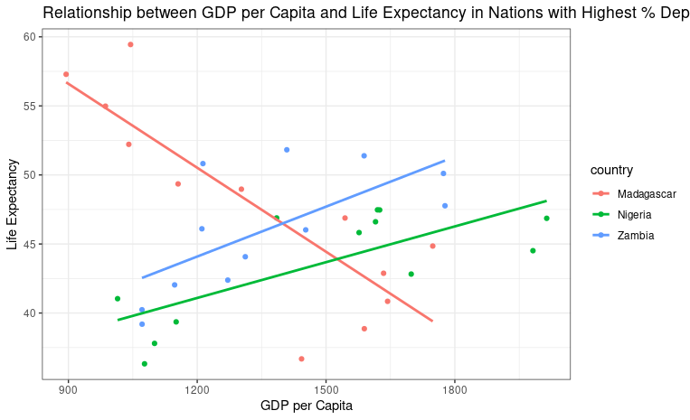

MT5000: Data Analytics & Visualization
Quarto Assignment 2
Simon Leacy
22268931
Introduction/Context
The purpose of this assignment was to act as a Data Analsyst fro Unicef aiming to raise awareness on a specific issues. The dataset i was assigned with analyzing was the UNICEF data used for assignment of Tableau. This data focuses on probelms children face at a one age primarily in third world nations. The indicator 1 data file includes information on the percentage of children suffering from at least five deprivation. This refers to issues regarding child poverty. Indicator 2 which I examined earlier this year through Tabluea includes in -depth data on children <5 receiveing ACT. In the Tableau assignment I focused mainly on indicator 2 due to this my analysis included in this project is mostly referring to indicator 1.
The 4 Visualizations and a brief description of the findings are located below:
A World Map depicting the proportion of children suffering from at least five deprivation.
A bar chart portraying the countries with highest proportion of at least five deprivations in the latest year provided in the data set.
A scatter plot showing the GDP and Life Expectancy relationship in the nations with highest proportion of suffering.
Finally, I included a time-series chart that examines Indicator 2 but in the countries where the highest proportion of at least 5 deprivations is present.
Figure 1:
Below in Figure 1 we can witness the exact regions which are prdeominently affected by child poverty and in particualar at least 5 deprivations. Majority of the population which is stricken by poverty is located in Africa. From the colour scheme created a clear comparison can be made between the severity in each area. The darker the shade on the map the higher the proprtion of suffering at least five deprivationsis present. Europe and Northern America are insignificantly affected by such issues.
From the map the main areas facing the biggest threat are
Papa New Guinea
Madagascar
Having this information represented clearly on a map allows for the implentation of vital public health strategies.

Figure 2:
Figure 2 contains information on the countries that encountered the highest % of children suffering from the 5 deprivations, specifically in the year 2018. The reason for the section of 2018 is due to it being the latest year in the datafile provoded for indicator 2. It is interesting to note the chnage in the world map above. Papa New Guinea has fallen down the ranking for the worst nation in terms of %. This is a possible indication of the work being done by UNICEF over the last number of years. Significant development to solve this imoral issue is required urgently in Madagascar. As the chief data analyst for this project I strongly recommend action to be taken immediately. The number of children suffering is far greater than even any other developng country.

Figure 3:
Below is a clear and concisely developed scatter-plot expressing the relationship between GDP per Capita and the life expectancy in three pre-selected nations. For the purpose of consistency the three regions I chose for this analysis were Madagascar, Nigeria and Zambia. I belive the most latest data is what should be evaluated to provide insight into possible trends that have led to such high proportions of child poverty deprivation. From the below graph one can clearly see the stark contrast that exists among one of the 3 nations.
It is highly concerning to view the state of Madagascar’s decline in GDP and life expectancy. The linear regression line plotted depicts the negative downward trend that is ongoing. On the other hand Nigeria and Zambia are experiencing exponential growth in GDP and life expectancy.This graph shows the strong association that exits between an increase in GDP and life expectancy. Once again the summary is that Madagascar is suffering finacially and subsequently health concerns are rampant.

Figure 4:
Finally, this Time-Series chart below examines a differnt indicator provided in the UNICEF data file placed on my desk for analysis. This time-series chart is examining the proportion of febrile children <5 receiving ACT medication for Malaria. The time period being examined is from 2011 to 2018. The date and countries are in keeping with the theme of this overall analysis as Madagascar, Nigeria and Zambia are once again on display. I believe it to be important to examine the health trends of the same countries through a different lens.
From the graph we can see firstly that Zambia as of 2014 no longer requires ACT treatment for those under 5. Nigeria’s trend line is sporadic moving up and down through the years, a potential indication of interventions being made and then ceased. The number of children receiving ACT in Nigeria is worryingly high as of 2018. The main country examined throughout this report is Madagascar. From the time-series its clear that once again very little, if any public health interventions are being implemented. Th ecountry experienced a slight drop-off in numbers in 2013 but is slowing increasing year on year. Overall, in my expert opinion the data tells a clear story and that is of Madagascar and its’s people requiring rapid help from other nations and governments.